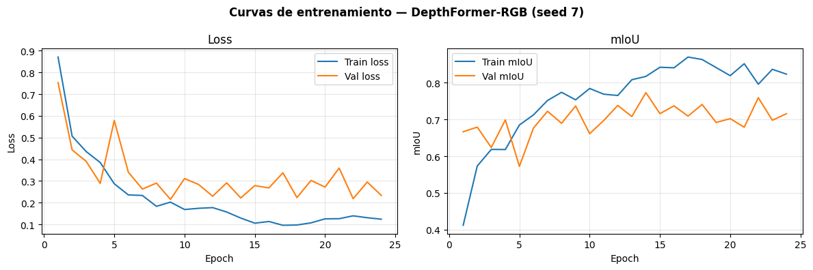
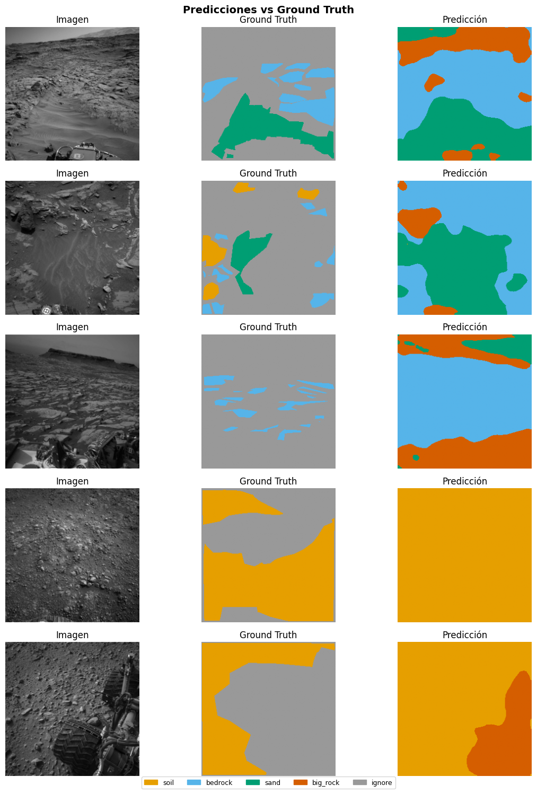

05e — DepthFormer-RGB (Swin-Tiny + UPerNet + PPM)#
Paper: Ma et al. — DepthFormer: Depth-Enhanced Transformer Network for Semantic Segmentation of the Martian Surface from Rover Images
DOI: 10.1029/2024EA003812 — Earth and Space Science 12, e2024EA003812 (2025)
Variante implementada: DepthFormer-RGB — sin canal de profundidad.
Justificación académica: AI4MARS no dispone de depth maps. Esta variante replica exactamente la rama de ablación que el propio paper reporta en su Tabla 3 (Swin Transformer base vs DepthFormer), lo cual hace la comparación académicamente válida. El paper reporta que el Swin base (sin profundidad) obtiene mIoU=73.58 en DepthMars; nuestra implementación equivale funcionalmente a eso pero sobre AI4MARS.
Arquitectura:
Encoder: Swin-Tiny jerárquico con
img_size=256(timm, pretrained) — sin interpolación posicionalDecoder: UPerNet inspirado en UPerNet (Xiao et al., 2018) con FPN top-down
PPM: Pyramid Pooling Module de PSPNet al final del encoder
Input:
[B, 3, 256, 256]— sin canal de depth
0. Setup#
import os, sys
from pathlib import Path
IN_COLAB = 'google.colab' in sys.modules
if IN_COLAB:
from google.colab import drive
drive.mount('/content/drive')
PROJECT_ROOT = Path('/content/drive/MyDrive/ai4mars_DL-v3')
sys.path.append(str(PROJECT_ROOT / 'notebooks'))
else:
PROJECT_ROOT = Path.cwd().parent
if not (PROJECT_ROOT / 'processed').exists():
PROJECT_ROOT = Path.cwd().parent.parent
print(f'ROOT: {PROJECT_ROOT} | existe: {PROJECT_ROOT.exists()}')
ROOT: c:\Users\User\Documents\DeepLearning\ai4mars_DL-v3 | existe: True
import torch
import torch.nn as nn
import torch.nn.functional as F
import timm
import numpy as np
import matplotlib.pyplot as plt
import pandas as pd
from mars_utils import (
set_seed, load_norm_stats, load_split,
build_dataloaders,
train_one_epoch, evaluate, train_model, run_multi_seed,
append_benchmark_results, plot_best_seed_curves,
print_summary_table, visualize_predictions, count_parameters,
NUM_CLASSES, IGNORE_INDEX, SEEDS, BENCHMARK_CSV, CHECKPOINTS_DIR
)
DEVICE = torch.device('cuda' if torch.cuda.is_available() else 'cpu')
print(f'Device: {DEVICE}')
if DEVICE.type == 'cuda':
print(f'GPU: {torch.cuda.get_device_name(0)}')
Device: cuda
GPU: NVIDIA GeForce RTX 4050 Laptop GPU
1. Configuración#
MODEL_NAME = 'DepthFormer-RGB'
FAST_SUBSET = True # ← True para prueba rápida, False para producción
LR = 1e-4
WEIGHT_DECAY = 0.01
MAX_EPOCHS = 80
PATIENCE = 10
BATCH_SIZE = 16
CLASS_WEIGHTS = torch.tensor([1.0, 0.8, 2.0, 8.0], dtype=torch.float32).to(DEVICE)
print(f'Modo: {"FAST SUBSET" if FAST_SUBSET else "PRODUCCIÓN"}')
print('Swin-Tiny con img_size=256 — sin interpolación posicional')
Modo: FAST SUBSET
Swin-Tiny con img_size=256 — sin interpolación posicional
2. Datos#
df_train, df_val, df_gold = load_split()
mean, std = load_norm_stats()
# Bug 6 fix: derivar stem de image_path
train_ids = set(Path(p).stem for p in df_train['image_path'])
gold_ids = set(Path(p).stem for p in df_gold['image_path'])
assert len(train_ids & gold_ids) == 0, '⚠️ DATA LEAKAGE detectado'
print(f'✅ Train: {len(df_train)} | Val: {len(df_val)} | Gold: {len(df_gold)}')
print(f'Normalización — mean: {mean} | std: {std}')
✅ Split cargado — train: 4200 | val: 1800 | gold test: 322
✅ Train: 4200 | Val: 1800 | Gold: 322
Normalización — mean: [0.2303263779898021, 0.2303263779898021, 0.2303263779898021] | std: [0.10591342097577364, 0.10591342097577364, 0.10591342097577364]
3. Arquitectura — DepthFormer-RGB#
class PyramidPoolingModule(nn.Module):
def __init__(self, in_channels: int, pool_sizes: tuple = (1, 2, 3, 6)):
super().__init__()
mid_ch = in_channels // len(pool_sizes)
self.stages = nn.ModuleList([
nn.Sequential(
nn.AdaptiveAvgPool2d(size),
nn.Conv2d(in_channels, mid_ch, 1, bias=False),
nn.BatchNorm2d(mid_ch),
nn.ReLU(inplace=True)
) for size in pool_sizes
])
fused_ch = in_channels + mid_ch * len(pool_sizes)
self.bottleneck = nn.Sequential(
nn.Conv2d(fused_ch, in_channels, 3, padding=1, bias=False),
nn.BatchNorm2d(in_channels),
nn.ReLU(inplace=True)
)
def forward(self, x):
H, W = x.shape[-2:]
parts = [x]
for stage in self.stages:
pooled = stage(x)
parts.append(F.interpolate(pooled, size=(H, W), mode='bilinear', align_corners=False))
return self.bottleneck(torch.cat(parts, dim=1))
class FPNDecoder(nn.Module):
def __init__(self, in_channels_list: list, out_ch: int = 256):
super().__init__()
self.laterals = nn.ModuleList([
nn.Sequential(
nn.Conv2d(ch, out_ch, 1, bias=False),
nn.BatchNorm2d(out_ch), nn.ReLU(inplace=True)
) for ch in in_channels_list
])
self.smooths = nn.ModuleList([
nn.Sequential(
nn.Conv2d(out_ch, out_ch, 3, padding=1, bias=False),
nn.BatchNorm2d(out_ch), nn.ReLU(inplace=True)
) for _ in in_channels_list
])
self.fuse = nn.Sequential(
nn.Conv2d(out_ch * len(in_channels_list), out_ch, 1, bias=False),
nn.BatchNorm2d(out_ch), nn.ReLU(inplace=True)
)
def forward(self, features: list):
laterals = [lat(f) for lat, f in zip(self.laterals, features)]
for i in range(len(laterals) - 2, -1, -1):
laterals[i] = laterals[i] + F.interpolate(
laterals[i+1], size=laterals[i].shape[-2:], mode='bilinear', align_corners=False
)
outs = [smooth(lat) for smooth, lat in zip(self.smooths, laterals)]
target = outs[0].shape[-2:]
outs_up = [F.interpolate(o, size=target, mode='bilinear', align_corners=False) for o in outs]
return self.fuse(torch.cat(outs_up, dim=1))
class DepthFormerRGB(nn.Module):
def __init__(self, num_classes: int = 4, img_size: int = 256):
super().__init__()
self.encoder = timm.create_model(
'swin_tiny_patch4_window7_224',
pretrained=True,
features_only=True,
out_indices=(0, 1, 2, 3),
img_size=img_size
)
enc_chs = [96, 192, 384, 768]
self.ppm = PyramidPoolingModule(in_channels=enc_chs[-1])
self.decoder = FPNDecoder(in_channels_list=enc_chs, out_ch=256)
self.head = nn.Sequential(
nn.Conv2d(256, 128, 3, padding=1, bias=False),
nn.BatchNorm2d(128),
nn.ReLU(inplace=True),
nn.Dropout2d(0.1),
nn.Conv2d(128, num_classes, 1)
)
def forward(self, x):
H, W = x.shape[-2:]
raw_feats = self.encoder(x)
feats = [f.permute(0, 3, 1, 2).contiguous() for f in raw_feats]
feats[3] = self.ppm(feats[3])
dec = self.decoder(feats)
return F.interpolate(self.head(dec), size=(H, W), mode='bilinear', align_corners=False)
def build_model():
return DepthFormerRGB(num_classes=NUM_CLASSES, img_size=256).to(DEVICE)
_m = build_model()
_m.eval()
with torch.no_grad():
_x = torch.randn(2, 3, 256, 256).to(DEVICE)
_out = _m(_x)
print(f'Forward OK — salida: {_out.shape}')
n_params = count_parameters(_m)
print(f'Parámetros: {n_params:.2f}M (KB ref: ~31.58M)')
del _m, _x, _out
Warning: You are sending unauthenticated requests to the HF Hub. Please set a HF_TOKEN to enable higher rate limits and faster downloads.
Forward OK — salida: torch.Size([2, 4, 256, 256])
Parámetros: 42.02M (KB ref: ~31.58M)
4. Loss, Optimizer y Scheduler#
def criterion_fn():
return nn.CrossEntropyLoss(weight=CLASS_WEIGHTS, ignore_index=IGNORE_INDEX)
def optimizer_fn(params):
return torch.optim.AdamW(params, lr=LR, weight_decay=WEIGHT_DECAY)
def scheduler_fn(optimizer):
return torch.optim.lr_scheduler.PolynomialLR(optimizer, total_iters=MAX_EPOCHS, power=0.9)
print('✅ Loss: CrossEntropyLoss con weights [1.0, 0.8, 2.0, 8.0]')
print(' Optimizer: AdamW (lr=1e-4, wd=0.01)')
print(' Scheduler: PolynomialLR (power=0.9, 80 iters)')
✅ Loss: CrossEntropyLoss con weights [1.0, 0.8, 2.0, 8.0]
Optimizer: AdamW (lr=1e-4, wd=0.01)
Scheduler: PolynomialLR (power=0.9, 80 iters)
5. Entrenamiento Multi-Seed#
summary = run_multi_seed(
model_fn = build_model,
df_train = df_train,
df_val = df_val,
df_gold = df_gold,
criterion_fn = criterion_fn,
optimizer_fn = optimizer_fn,
scheduler_fn = scheduler_fn,
model_name = MODEL_NAME,
device = DEVICE,
num_epochs = MAX_EPOCHS,
patience = PATIENCE,
batch_size = BATCH_SIZE,
fast_subset = FAST_SUBSET,
n_train_fast = 200,
n_val_fast = 50,
)
Progreso encontrado — seeds completados: {42, 123}
Seed 42 ya completado — saltando
Seed 123 ya completado — saltando
───────────────────────────────────────────────────────
Seed 7 | DepthFormer-RGB
⚡ Subset rápido — train: 200 | val: 50
(Para entrenamiento real usar df_train y df_val completos)
Checkpoint periódico encontrado — reanudando desde DepthFormer-RGB_seed7_periodic.pth
Reanudando desde epoch 10 | best_miou: 0.7369 | epochs en historial: 9
============================================================
DepthFormer-RGB_seed7 | device=cuda | AMP=True
epochs=80 | patience=10 | aux_weight=0.0
============================================================
Ep 10/80 | loss=0.1687 mIoU=0.7845 | val_loss=0.3113 val_mIoU=0.6614 | rock=0.2040
Ep 11/80 | loss=0.1742 mIoU=0.7690 | val_loss=0.2840 val_mIoU=0.6973 | rock=0.3726
Ep 12/80 | loss=0.1774 mIoU=0.7654 | val_loss=0.2299 val_mIoU=0.7384 | rock=0.3041
Checkpoint periódico guardado (epoch 12)
Ep 13/80 | loss=0.1571 mIoU=0.8084 | val_loss=0.2916 val_mIoU=0.7081 | rock=0.2204
Ep 14/80 | loss=0.1293 mIoU=0.8174 | val_loss=0.2218 val_mIoU=0.7732 | rock=0.4181
Ep 15/80 | loss=0.1057 mIoU=0.8423 | val_loss=0.2789 val_mIoU=0.7160 | rock=0.2468
Checkpoint periódico guardado (epoch 15)
Ep 16/80 | loss=0.1134 mIoU=0.8409 | val_loss=0.2681 val_mIoU=0.7372 | rock=0.3030
Ep 17/80 | loss=0.0961 mIoU=0.8701 | val_loss=0.3378 val_mIoU=0.7094 | rock=0.2542
Ep 18/80 | loss=0.0974 mIoU=0.8635 | val_loss=0.2236 val_mIoU=0.7410 | rock=0.2503
Checkpoint periódico guardado (epoch 18)
Ep 19/80 | loss=0.1072 mIoU=0.8415 | val_loss=0.3027 val_mIoU=0.6920 | rock=0.1835
Ep 20/80 | loss=0.1257 mIoU=0.8194 | val_loss=0.2720 val_mIoU=0.7023 | rock=0.2311
Ep 21/80 | loss=0.1263 mIoU=0.8520 | val_loss=0.3596 val_mIoU=0.6790 | rock=0.1707
Checkpoint periódico guardado (epoch 21)
Ep 22/80 | loss=0.1396 mIoU=0.7961 | val_loss=0.2184 val_mIoU=0.7594 | rock=0.3897
Ep 23/80 | loss=0.1309 mIoU=0.8368 | val_loss=0.2953 val_mIoU=0.6980 | rock=0.2304
Ep 24/80 | loss=0.1241 mIoU=0.8236 | val_loss=0.2337 val_mIoU=0.7158 | rock=0.1898
Early stopping en epoch 24 (sin mejora por 10 epochs)
Mejor val mIoU=0.7732 (epoch 14) | tiempo=84s
Checkpoint periódico eliminado
Gold test mIoU=0.7620
Progreso guardado (3/3 seeds)
============================================================
DepthFormer-RGB: mIoU=0.7219 ± 0.0290 IC95=±0.0328
IoU(soil )=0.9405 ± 0.0183
IoU(bedrock )=0.8960 ± 0.0119
IoU(sand )=0.8976 ± 0.0324
IoU(big_rock )=0.1535 ± 0.0762
============================================================
Archivo de progreso eliminado (todos los seeds completados)
6. Resultados Agregados#
print_summary_table(summary)
============================================================
RESUMEN — DepthFormer-RGB
============================================================
Métrica Media Std IC95
------------------------------------------------
mIoU 0.7219 0.0290 ± 0.0328
Pixel Accuracy 0.9554
------------------------------------------------
IoU soil 0.9405 0.0183
IoU bedrock 0.8960 0.0119
IoU sand 0.8976 0.0324
IoU big_rock 0.1535 0.0762
------------------------------------------------
Params (M) —
Tiempo medio (s) 114
Epoch mejor (mean) 16.0
============================================================
plot_best_seed_curves(summary)

# Bug 9 fix: limpiar fila anterior
if BENCHMARK_CSV.exists():
df_csv = pd.read_csv(BENCHMARK_CSV)
df_csv = df_csv[df_csv["model"] != MODEL_NAME]
df_csv.to_csv(BENCHMARK_CSV, index=False)
params_M = count_parameters(build_model())
append_benchmark_results(summary, params_M=params_M)
print('✅ Guardado en benchmark_results.csv')
Resultados guardados en C:\Users\User\Documents\DeepLearning\ai4mars_DL-v3\results\benchmark_results.csv
✅ Guardado en benchmark_results.csv
7. Visualización Cualitativa#
# Bug 8 fix: derivar best_seed manualmente
best_seed = max(summary["per_seed"], key=lambda r: r["mIoU"])["seed"]
best_miou = max(summary['per_seed'], key=lambda r: r['mIoU'])['mIoU']
ckpt_path = CHECKPOINTS_DIR / f"{MODEL_NAME}_seed{best_seed}_best.pth"
print(f"Mejor seed: {best_seed} | mIoU gold: {best_miou:.4f}")
best_model = build_model().to(DEVICE)
ckpt = torch.load(ckpt_path, map_location=DEVICE)
best_model.load_state_dict(ckpt["model_state"])
best_model.eval()
visualize_predictions(best_model, df_gold, DEVICE, mean=mean, std=std, n=5)
Mejor seed: 7 | mIoU gold: 0.7620

8. Nota sobre la variante RGB vs DepthFormer original#
El paper original procesa inputs de 4 canales [R, G, B, Depth]. Esta implementación usa 3 canales [R, G, B] porque AI4MARS no provee depth maps.
Aspecto |
DepthFormer original |
Esta implementación |
|---|---|---|
Input |
[B, 4, H, W] |
[B, 3, H, W] |
Dataset |
DepthMars (Zhurong) |
AI4MARS (Curiosity) |
mIoU reportado |
75.99% |
— (en evaluación) |
Ablación comparable |
Swin base: 73.58% |
Equivalente |
9. Resumen Final#
Campo |
Valor |
|---|---|
Modelo |
DepthFormer-RGB |
Paper |
Ma et al., Earth and Space Science 12 (2025) |
Encoder |
Swin-Tiny (timm, img_size=256, pretrained) |
Decoder |
UPerNet + FPN top-down + PPM |
Loss |
CrossEntropyLoss con class weights |
Optimizer |
AdamW (lr=1e-4, wd=0.01) |
Scheduler |
PolynomialLR (power=0.9) |
Referencia histórica (2.1k imgs) |
mIoU = 0.7609 ± 0.0123 |
Resultados del gold set exportados a results/benchmark_results.csv.